截图记录
这些画面验证了什么
有时最终画面还没有成形，渲染过程中的诊断图已经能看见几何体。下面的对照图逐一标明每张截图来自哪个阶段。
河面在哪一步变黑
G24 的连续三帧中，先是右上方出现黑块，接着河面清楚显现，然后左下方又被黑块遮住。在第 4169 帧，两个原始水面着色器分别为原生坐标 (1120, 736) 和 (1216, 1008) 写入了颜色。到了第 4170 帧，同一对像素经过这两次绘制后仍为零，后续光照只增加约 0.0001。两帧的全屏视口、裁剪范围和间接绘制输入地址都相同。缺色的原因尚未确定。


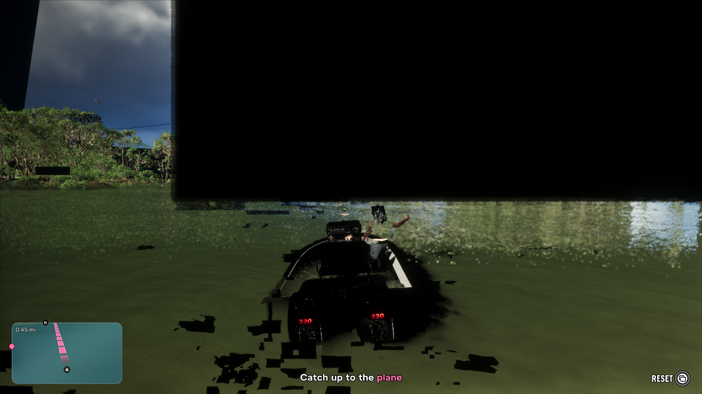
G25 实际执行了阴影处理，实测每秒显示 5.108 帧
在第一和第二个快艇检查点，两个原始阴影分块分类程序都实际执行。在同一块 GPU、相同的 0.45 英里静止航点，G23 每秒实际显示 5.257 帧，G25 为 5.108 帧。两轮均覆盖 120 个间隔，121 个已显示帧编号连续，期间没有编译着色器。两次的云层和绘制数量有所不同。这是整套构建的对照，没有测到提速，也无法把差异归因于某个着色器。船底仍然有黑块。

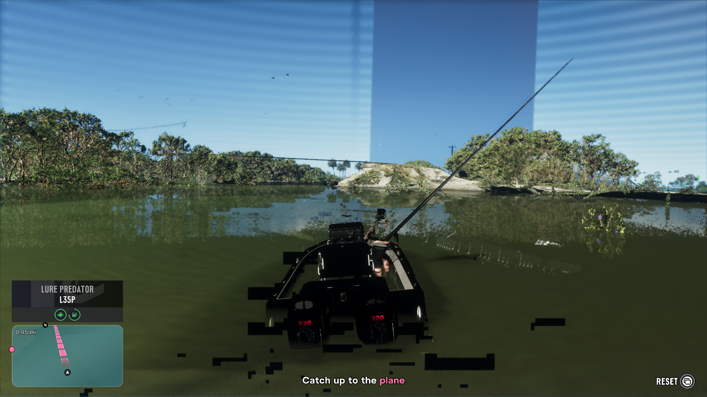
G22 从栈道走到了翻扣的小艇旁
G22 跳过四个检查点后回到“搜索营地寻找唐尼”。游戏于 04:35:51 UTC 读到向前与奔跑输入，04:36:01 读到松开。后面的截图中，角色已经走到翻扣的小艇旁。躯干大部分缺失，岸边横着一块粉色平面。另一路 G13 到达的营救目标仍是目前记录的最远剧情进度。

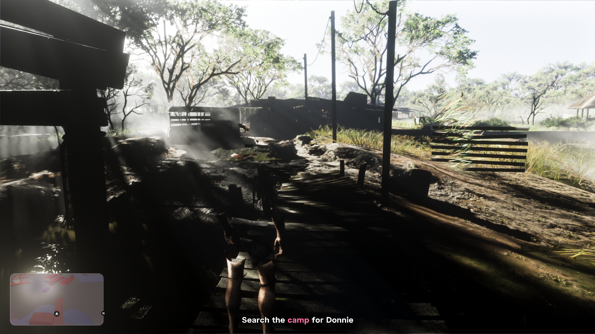

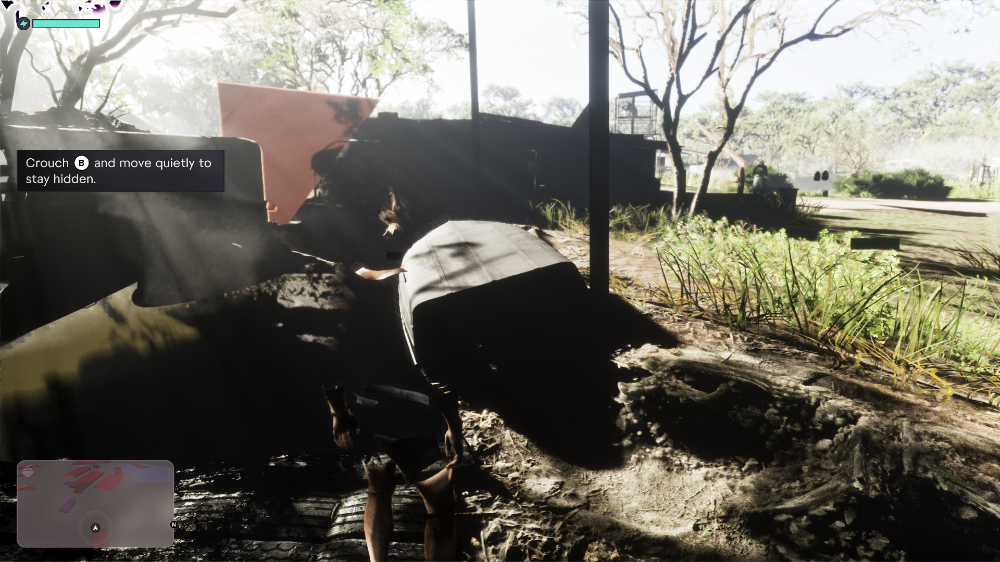
G23 也抵达了栈道，这次跳过三次检查点
乘船阶段自行推进到营地，没有使用第四次跳过。两次向前奔跑让角色走向翻扣的船体和另一组栈道立柱。原生画面可见搜索目标、双腿和一条手臂，大片黄色与深色多边形仍遮住场景。三张栈道截图的 21 个显示颜色采样值全部吻合，步行后三帧的另外 21 个采样点也全部吻合。

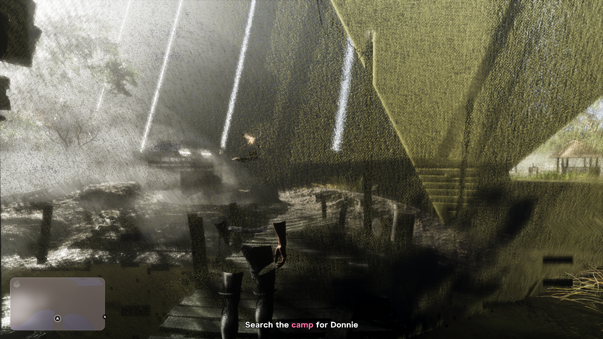

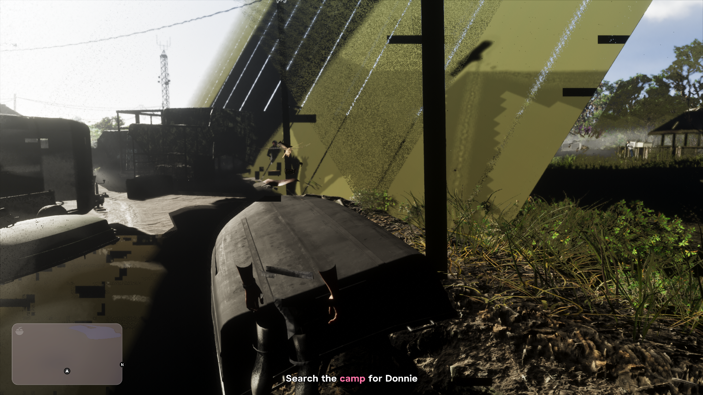
同一个河面检查点，两张截然不同的画面
G23 第 2913 帧中，一块深色三角形遮住了船上方的大半天空。到了同一条 0.45 英里路线的第 3406 帧，已经可以看到乘客、船尾、云和岸边倒影。船上仍有缺面，周围还散布着黑色矩形。两组三帧截图分别取样 21 次，所有 RGB 值均与 GPU 最终输出一致。这个较清楚的瞬间还不足以证明画面已稳定修复，或快艇已沿路线前进。


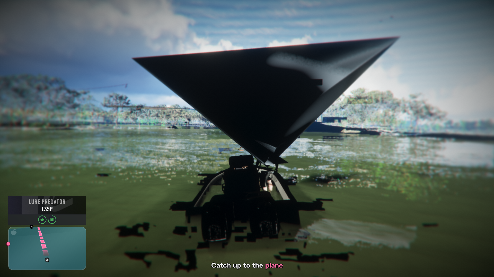
G21 跳过四个检查点后抵达营地栈道
原生界面显示“搜索营地寻找唐尼”。画面中可以辨认双腿、头发、木桩和栈道，但躯干大部分缺失。G21 通过游戏提供的四次跳过检查点进入这段步行任务；G20 则用了三次。两条路径分别记录。G13 两次推进到“救出唐尼”，其中一次没有捡锤子。营救仍未完成。

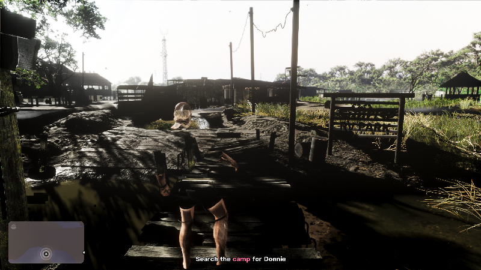
营地步行一分钟，原生呈现速率为每秒 2.326 帧
03:20:42 至 03:21:42 UTC，玩家从涡轮机跑向唐尼。G13 的原生时钟在 60.201 秒内记录了 140 个呈现间隔，全程没有暂停或打开菜单。这是游戏提交画面的速率，与窗口采集工具的取样频率无关，只代表诊断配置下的这一次营地步行。G19 和 G21 的河面数据来自另一场景。
在水面上方成功打开望远镜
G22 的一次岸边重试中，游戏画出了无线电塔、建筑和水中倒影。按住左扳机并用右摇杆转动视角后，出现了望远镜的圆角遮罩、分划线和缩放提示。G23 随后也在水面上方显示了相同的控件；而在一次位于水下的重试中，游戏读到了扳机输入，却仍提示按下扳机。这些都发生在进营地之前的乘船检查点。

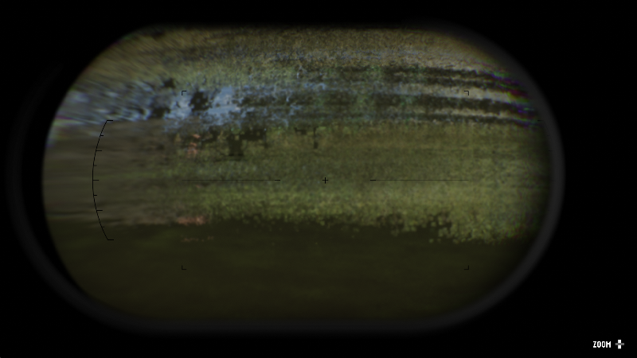

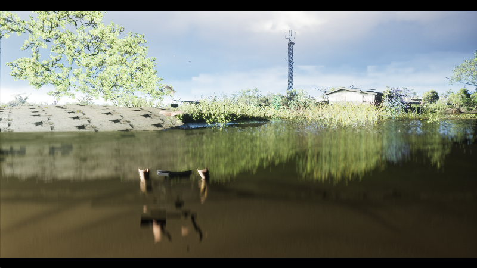

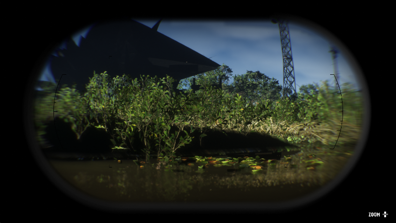
G22 实际运行了皮肤预滤波着色器
游戏在第 2321 帧选用了原始皮肤预滤波着色器。03:56:52 UTC，D3D12 驱动创建了管线，两秒后它出现在带 GPU 计时的提交中。原始命令流还在第 2908 与 4088 帧记录到了间接调度。团队正在追踪后续的光照处理，以确定它改变了哪些像素。
网格测试不再绘制超出请求数量的三角形
G24 候选版本能从 12 个原始网格着色器中读取游戏请求的顶点和图元数。在 RTX 5090 和 WARP 软件渲染器上，旧版的六种受控输入都绘出了 256 个像素。修正后，本该为空的四种情形输出零像素，另外两种仍各输出 256 个。四对真实着色器也均在这两种渲染器上建成管线。它能否消除营地的大块异常图形，还需同场景的游戏截图验证。
阴影分块测试中，14,400 个坐标各处理一次
这个场景里的两个原始阴影程序每个工作组使用 48 个线程。在 RTX 测试中，旧调度代码曾漏掉 1,808 个坐标，同时把另外 1,808 个坐标算了两次。G25 为最后一组未满的线程分配固定位置。在三种调度顺序下，全部 14,400 个坐标都恰好处理了一次。两个原始程序都已成功创建原生驱动管线。实际画面中的阴影是否改善，仍待同场景对照。
快艇场景合并 GPU 拷贝后，指令数量减少了 76.5%
G21 在三轮测试之间使用游戏自带的“重试”，每次回到相同的 0.45 英里航点静止测量。逐项拷贝、合并拷贝、再恢复逐项拷贝，每帧 GPU 拷贝指令数的中位数分别为 591.67、139.17 和 594.20 条，实际显示帧率则分别为 5.515、5.540 和 5.235。每轮覆盖 120 个帧间隔，已显示帧编号连续，期间没有着色器编译。尽管指令数量显著下降，这三轮没有测到明确的帧率提升。

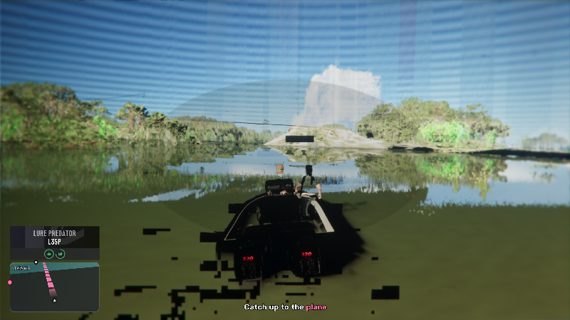
这次从快艇到营地，跳过了三个检查点
G20 先在快艇里绘出了乘客，随后经过游戏提供的三次跳过检查点，目标变为“搜索营地寻找唐尼”。最后一次跳过发生在 03:27:43 UTC，之后没有再输入操作。03:31:41，游戏来到木栈道，提示按 B 蹲下。巨大的错误多边形仍遮住角色的大部分身体。对连续三张原生 1080p 画面，每帧选取七个采样点，将最终输出的红、绿、蓝值与 PNG 逐项比对。21 个位置全部吻合，即便有巨大异常多边形的帧也是如此。


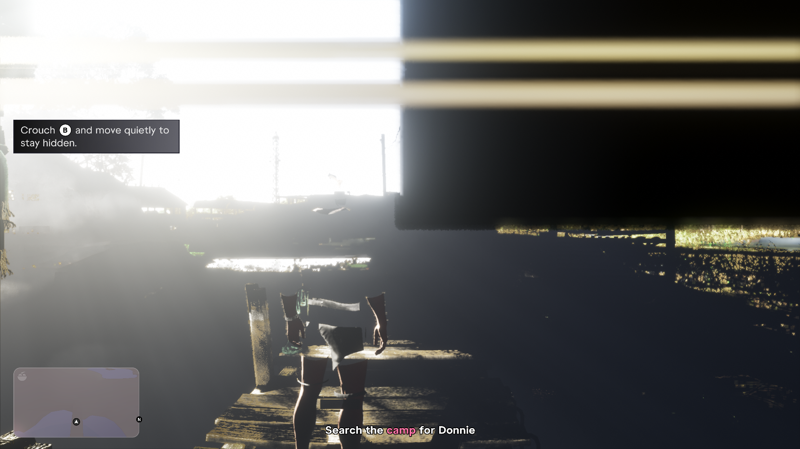
向前走后，栈道木桩和盘绳靠近了
游戏持续 8.505 秒读到向前输入。两张对应截图中，栈道木桩变大，横向位置从约 250 像素移到 150 像素；盘绳进入前景，小地图岸线也在居中的玩家标记下移动。角色上半身仍被遮挡。这段 G20 步行没有独立的帧率测量。

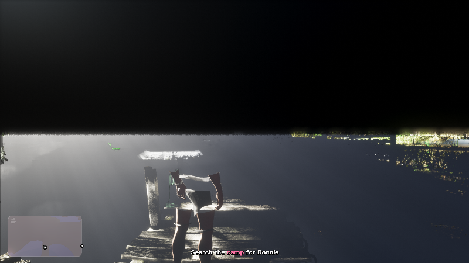

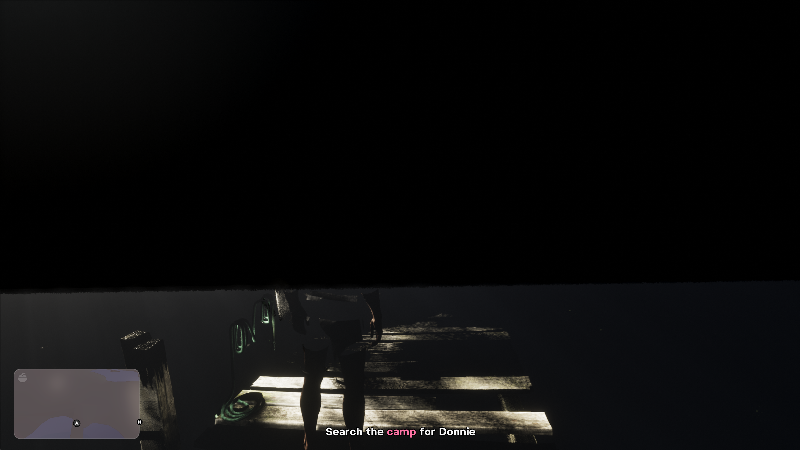
重生后，玩家没拿锤子也再次推进到“救出唐尼”
G13 第一次营救尝试以“Wasted”死亡画面结束。游戏自动回到搜索营地的检查点。第二次，玩家奔跑、攀爬并使用掩体。重生约八分钟后，“救出唐尼”再次出现，期间没有再跳过检查点、捡锤子或使用近战。这次同样以死亡和自动重生结束，营救仍未完成。

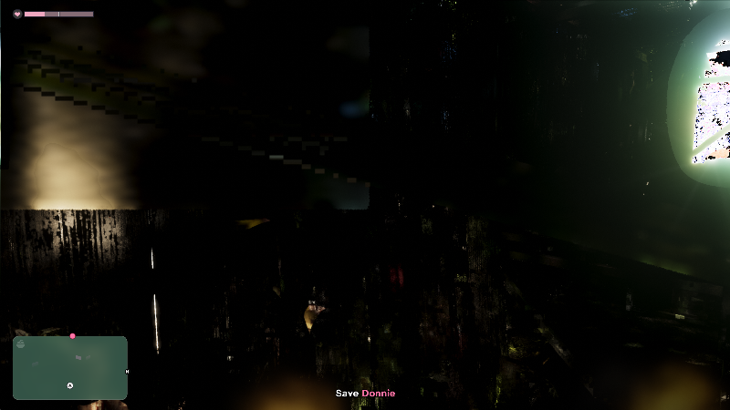

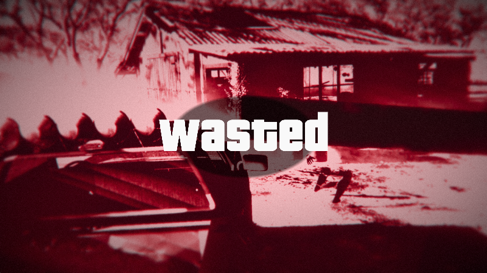

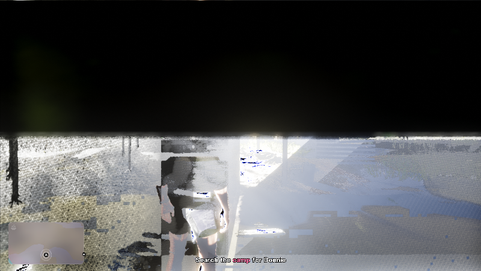

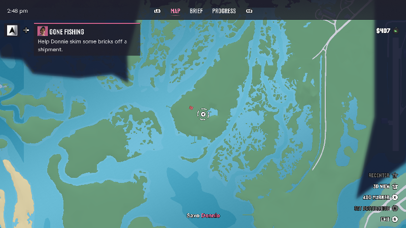
任务记录里，唐尼向杰森呼救
“Gone Fishing”任务地图上仍显示“Save Donnie”（救出唐尼）。随后在游戏的任务记录里可以看到唐尼向杰森呼救，以及寻找掩体的教程提示。两张菜单截图清楚保留了游戏原有的目标和对白，营救尚未完成。

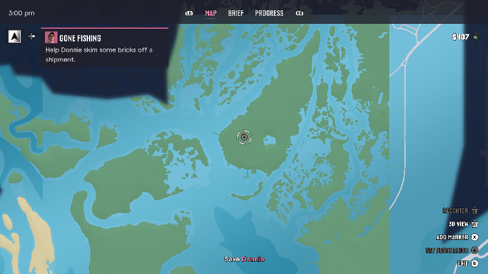

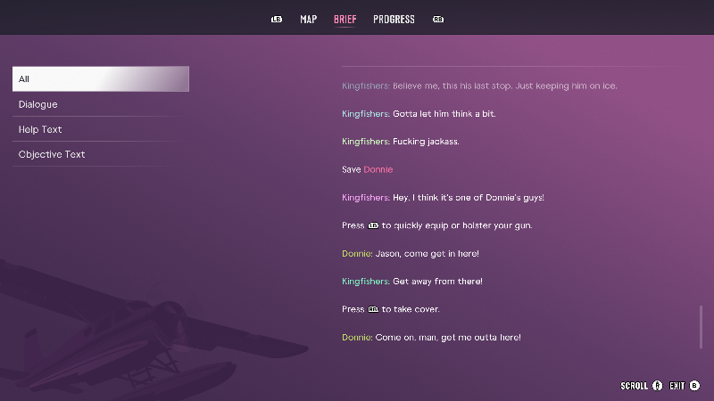

同一段对话中，角色的脸、脖颈和双肩重新出现
G19 中几乎只能看到头发、眉毛和睫毛。同一段对话、略有不同的姿势下，G20 绘出了脸部、脖颈和双肩。此前游戏实际运行了三个修正后的角色剔除着色器。两张图可见模型表面重新出现，光照仍然过暗，大多数面部细节难以辨认。第四个着色器仅在游戏外测过。

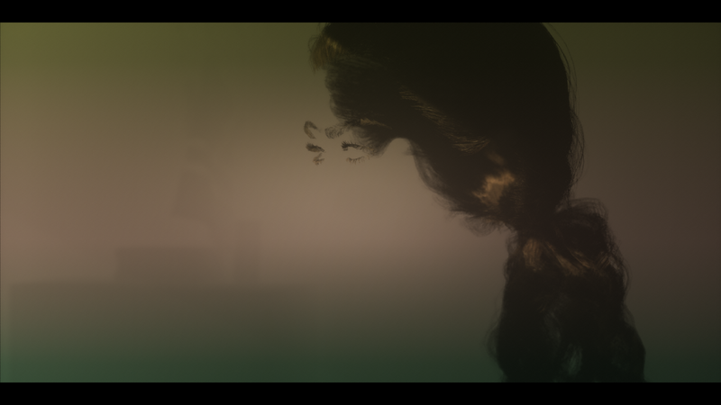

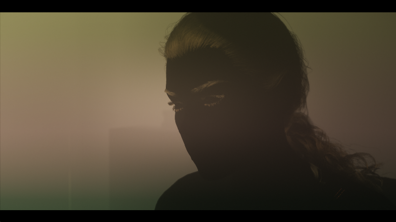

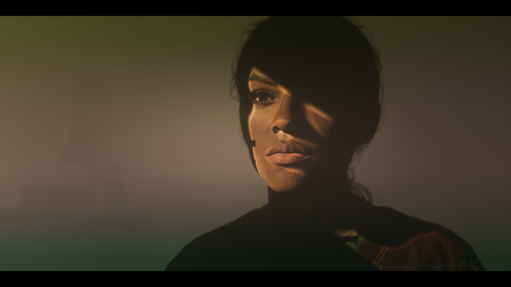
任务目标变为“救出唐尼”
装备长柄大锤后，玩家尝试了铰链门，向前移动并转动镜头。游戏把“想办法进入木屋”换成了“救出唐尼”。这期间没有再跳过检查点，具体哪一步触发了推进仍不清楚。界面确认的是新目标，尚未看到唐尼获救。

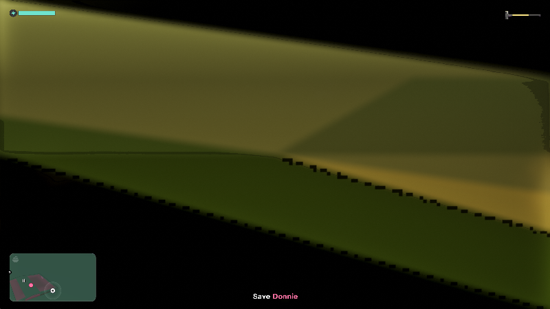

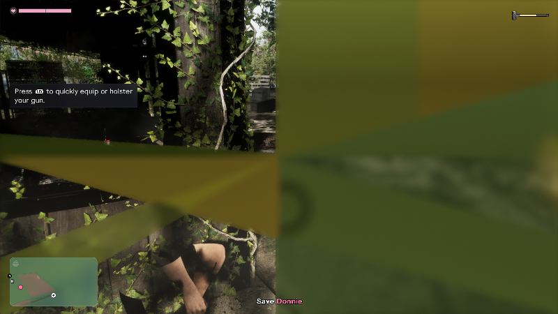
船后有尾流，地图上仍是 0.45 英里
首次快艇任务失败后，游戏给出了跳过检查点的选项。在“追上飞机”目标下，玩家持续十秒踩满油门。松开后不久，显示器呈现了第 4620 帧。两台发动机和尾流清晰可见，操作前后的路线距离都是 0.45 英里，仍未证实快艇沿追逐路线前进。


河面场景的实际显示帧率从 4.358 升至 5.454
在同一块 GPU、相同的 0.45 英里航点，团队松开全部操作，测量了 120 个帧间隔，然后启用帧提交重叠再测一次。两轮都实际显示了编号连续的 121 帧，期间没有编译着色器。帧间隔中位数由 227.9 降至 182.2 毫秒，第 95 百分位由 252.7 降至 220.7 毫秒。这一组对照的实际显示帧率提高了 25.15%，河面画面仍然每秒只更新约五次。
工作台上的羊角锤可以拾取
此前经过四次跳过检查点后，玩家步行抵达营地工作台。白色 HAMMER 提示出现时按下 LB，提示随即消失。角色弯下腰，普通游戏界面出现了锤子图标。装备轮盘接着明确显示“CLAW HAMMER / IN HAND”，即手持羊角锤。


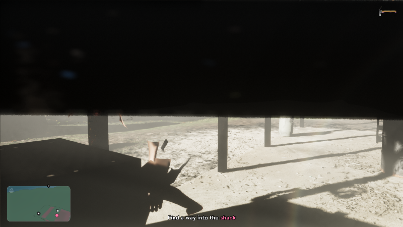
轮盘确认换上了第二件工具
在同一张工作台再次按 LB，手里的羊角锤换成了长柄大锤。轮盘显示“SLEDGEHAMMER / IN HAND”，原来的羊角锤则掉在地上，可以再次拾取。任务仍是“想办法进入木屋”，尚未记录到玩家进屋。


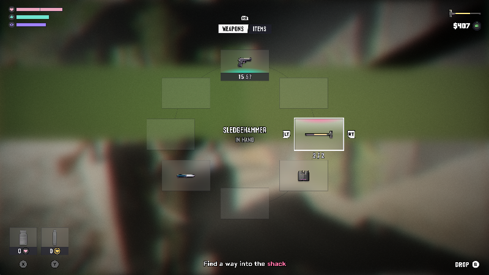
直到第一次快艇任务失败，存储写入都没有报错
存档、选项和存储请求编号设置与失败的 G16 对照一致。G17 的 17 条文件队列都等到明确的提交指令才执行。目标写入从失败 2,156 次、约 348 MiB，降为零。游戏在首个快艇目标中读到了油门，随后提示“卡尔掉下了船”。在下一个检查点，满油门十秒后显示的航程仍为 0.45 英里。


角色爬上了木屋屋顶
在木屋另一侧，玩家先后两次向前推动摇杆并按住 A。随后镜头从上方俯看波纹铁皮屋顶，屋檐外能看到地面。画面中的目标仍是“想办法进入木屋”。


走到木门前，任务仍提示想办法进屋
此前用了四次跳过检查点才到营地。随后靠步行和涡轮机聚焦推进了两个目标，游戏的简报菜单记录了顺序。角色已经走到双扇木门前。游戏的步行操作说明显示 Y 为交互，A 为跳跃／攀爬。此前确认前进和后退的测试只用了左摇杆。目前仍未看到成功进屋或与唐尼会面。


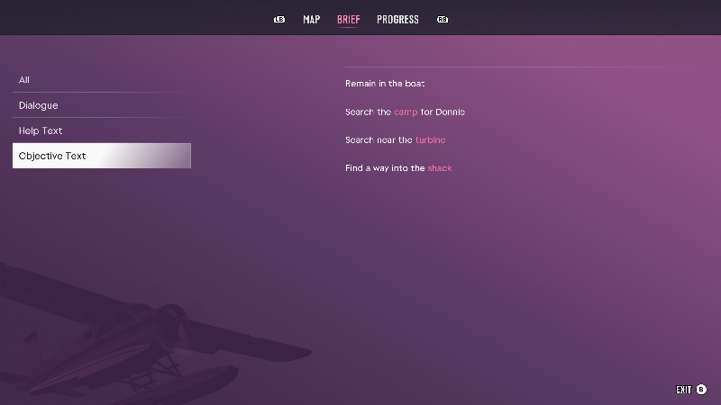
从涡轮机走到西侧廊檐
步行到达涡轮机附近并按住聚焦提示约十秒后，地图上出现了粉色标记。继续靠近后，任务变为“想办法进入木屋”。最初的入口受阻，角色沿岸绕过北墙，到达西侧廊檐。这两个目标接续此前四次跳过检查点后的营地路线，途中没有再跳关。


廊檐旁的查看操作
游戏原本的“查看”提示切换为 RT 缩放和 R 退出。画面未能辨认出物品，屏幕上仍提示寻找进入木屋的办法。

到达营地，用了四次跳过检查点
第一次跳过检查点，快艇追逐进入了下一阶段。第二次进入望远镜教程，第三次进入“留在船上”，第四次才到营地。在固定缩放的地图上，六处地标随前进和后退反向移动，松杆后保持稳定。两张图都来自游戏窗口。画面仍有黑色矩形，渲染也很慢；持续驾驶快艇和找到唐尼都还没有得到验证。


G6 · 本地候选版本
两段过场之后，快艇依然开不动
这次实机运行遇到了八个新的着色器程序，全部用游戏原有的着色阶段成功创建了原生管线。其中三个负责水体体积效果，一个负责光学效果，另有四个像素着色器。这些记录能确认管线创建成功，单个像素具体由哪个着色器生成还无法判断。
我在“跟上飞机”提示刚出现时和约四秒后各取了一帧，测量地平线以下同一块 643 × 185 像素的区域。G4 两帧的品红色占比分别为 29.15% 和 10.55%，G6 两帧均为 0%。两次运行的镜头和时序略有差别，G6 的水面仍有明显黑块。
我选了“重试检查点”便松开所有按键。从任务提示隐约出现，到红色的“引擎已损毁”警告亮起，按画面采样计时，G4 用了 7.430 秒，G6 用了 6.835 秒。两次任务都以“Cal 掉下了船”告终。G6 重试时，小地图上抽查的 18 行像素中，岛岸边缘始终停在原位。


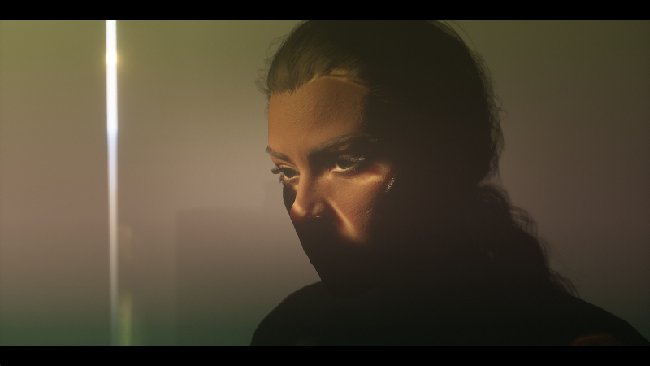

23:31 UTC · 本次核对时间
从快艇到望远镜
在阳光场景的版本中，我见到了有名字的狱警，进入了办公室过场，随后到了有柜员的手柄教程。到了水上，松开手柄和按住油门重试，原有检查点都提示“Cal fell off the boat”（卡尔掉下了船）。我使用游戏自带的跳过检查点功能，才到了“追上飞机”的任务。
打方向时，两台舷外机都跟着转。加油门后船尾出现尾流，但岸线的相对位移不到 0.3 像素，界面距离一直是 0.45 英里。游戏提示“The boat couldn't be driven”（快艇无法驾驶）。第二次使用游戏自带的跳过功能后，岸边教程打开了装备轮盘。把摇杆推向右下角选中望远镜，任务随即更新为“Scope out the deal”（观察交易现场）。目前仍未验证快艇能靠自身动力航行。
使用同一上游运行时的另一位测试者也遇到了乘客落水、任务无法继续的问题。这个报告记录的是对方构建中的故障。 另一位测试者的快艇故障记录 · #279

23:31 UTC · 本次核对时间
片头的六秒动画里，有多少张画面真的变了？
在同一台机器上，保持常规截图开启，比较 Rockstar 标志运动的同一段六秒动画。原版本向窗口送出了 164 张图，其中只有 24 张不同。修正后送出 171 张，有 168 张不同。渲染端耗时的第 99 百分位从 151.88 毫秒降至 54.03 毫秒，客户端偶尔仍会出现 116.79 毫秒的间隔。直到第 900 帧，计划中的 25 张截图全部保留。
纹理检查现在能识别通过第二个映射写入的数据，PNG 编码也移出了呈现线程。我的自适应纹理检查与上游 PR #115 有重合。PNG 后台编码和正常退出时处理完剩余截图的改动，我已通过 PR #142 提交。记录时该提案仍在审核中。这组数据只衡量片头视频。
23:31 UTC · 本次核对时间
监狱院子的实测帧率从 2.951 升到 3.335
院落测试使用同一块 GPU 和相同的 Series X 视角，每个构建连续测量 650 个原生呈现间隔。第 95 百分位的间隔从 377.83 毫秒降至 330.77 毫秒。另一路 Series S 测试越过了此前第 1485 帧的设备移除错误，在第 1680 帧以原生 1080p 输出抵达同一院落。该路径的稳定帧率还没有测出。
另一次测试按关闭、开启、再关闭的顺序切换间接绘制实验，分别测得 3.03、2.93 和 3.26 帧/秒。此项实验目前保持关闭。院落中抽查的两帧里，队列总等待约为 190–200 毫秒，耗时最长的单条阴影掩码命令约占 11 毫秒。仅这一条命令解释不了大部分等待时间。
23:31 UTC · 本次核对时间
光线追踪场景里实际收到了什么
23:16 UTC 的监狱测试中，顶层加速结构里实际收到了 1,763 个实例。抽查的前四个实例变换值均为有限数，并引用了三个不同的原始底层加速结构。游戏现场的三角形数据仍待核实。预热后的院落测试已测到全部六个光照缓冲区。上游贡献者 cxccxc 在渲染器提交 90228a7 中修复了同样的两个光照着色器。这一场景的画面是否因此改善，尚未验证。
原有的浅水时间步长程序在硬件和 WARP 上分别测出了预期的 0.25 与 0.125，空输入和空指针用例也得到正确结果。这些数值测试能否带来实际的船体移动，还要在任务中重跑验证。
合入上游 #40、#235 和 #280 的改动后，选测的八个原始快艇及场景材质程序全部完成翻译，通过 DXIL 验证并建成原生测试管线。上一版八个均未通过。其中七项像素着色器测试搭配的是占位顶点着色器，实际游戏中的材质画面仍待核实。 上游光照修复 · cxccxc
公开分支与收录申请
我用描述性名称发布了阳光场景分支和较早的牢房分支。我另外向 PortWatch 提交了收录申请，目前仍在等待编辑决定，尚未获得收录位置或排名。
阳光场景分支 · 测试分支版本 89884ba5 · 早期牢房分支 · 早期版本 d25f89da · PortWatch 收录申请 #69
· 实测记录时间
普通游戏窗口里看到了阳光下的院子
我在上游 fxceless/victory-gta6 的 1684989 基线上加入保护措施后进行了测试。原生第 2400 帧里能看清阳光下的人物、围栏和瞭望塔。两根摇杆均有响应。玩家走到原有的狱警任务点后，画面上下出现黑边，游戏进入一段剧情，之后出现了一条新的走廊。
单独运行时，300 个原生帧间隔共耗时 119.636 秒，约合 2.51 帧/秒。这是我对上游渲染结果的独立复现。我先前的 cell-tutorial 分支记录的是画面几乎全黑的牢房测试。下方保留了那个版本的深度图、光照图和游戏界面截图。 上游基线提交 1684989
· 2026 年 11 月 24 日
Windows 上的牢房操作实测
窗口里看到了什么。 第 3580 帧，任务提示是“Approach a cellmate to interact with them”（接近狱友，与其互动）。第 3974 帧，提示已变成“Go with the prison guard”（跟随狱警）。最终图像与显示缓冲区一致。场景几乎全黑，HUD 文字依然清晰。任务在两次手柄指令之间发生变化。这个版本中，切换条件、与狱警的互动及任务完成情况都还未获确认。 查看游戏界面实帧 →
行走与转动视角。 游戏读取了四条方向相反的右摇杆指令，两轮测试后同一根柱子都回到了原位。我又用左摇杆做了两轮前进和后退，近处的包相对远处的门向前移动，之后再回到原处。第一次前进时，包和门分别移动了 18 和 1 像素。第二次分别是 10 和 0 像素。测量采用游戏原始场景深度。 查看操作测量 →
灰度房间图来自哪里。 这张灰度图是游戏间接光照通道的中间结果。该版本中，尚未录得玩家在正常彩色场景中移动的视频，也还没有测得玩家控制下的平均帧率。 查看光照截图 →
测试版本。 这次测试使用 VIctory 社区测试分支的本地修改版，在 Windows 和 NVIDIA 显卡上运行。该分支记载的上游基线是 d2a4bae。 VIctory 项目 · 上游基线
任务提示在两次输入之间发生变化
较早一帧要求玩家接近狱友。前一条左摇杆指令已经松开，下一次手柄测试开始前，跟随狱警的提示就已出现。正常彩色画面仍然几乎全黑。后来查看地图时，也没有找到可见的人物标记。


灰度房间图是怎样生成的
游戏在计算间接漫反射光照时，由 FinalGather 计算着色器写出这张单通道 R8_UINT 图像，随后屏幕探针的解析阶段读取这张图。它是渲染器内部的中间产物。下方另有一张深度图，用于测量摇杆操作带来的变化。

行走、视角与牢房教程
右摇杆两次向右再向左后，同一根柱子都回到了原来的水平位置。另一次前进和后退测试中，近处的包移动了 18 像素，远处的门只移动了 1 像素。后退后，包与起点相差不到或等于 1 像素。第二轮行走又重现了这一往返。测量网格为 800 × 450。游戏原始显示是暗色背景上的任务文字。这一版本中尚未看到与狱友互动或行走时的骨骼动画。

游戏中的操作说明
教程把左摇杆标为“Move around”（移动），右摇杆标为“Move the camera”（移动视角）。这张局部截图取自第 3317 帧的游戏原始 HUD 图层。

· 第 2226 帧
几何体已进入裁剪阶段，光源列表仍为空
五次行人绘制共调用网格着色器 28,032 次，输出 28,032 个图元。其中 9,411 个经过裁剪后输出。这五次绘制在 GPU 上的像素着色器调用数和通过测试的样本数均为零。
同一帧中，另一次光照绘制调用了 802,816 次像素着色器，通过测试的样本同为 802,816 个。此前的材质通道标记了 5,120 个分块。全部 57,600 个范围分块的光源列表都为空，光照掩码的十二层也全是零。
人物的颜色如何出现在窗口里
过场动画中，游戏显示了基础色图像。捕获的显示缓冲区与完整源图像逐像素一致，呈现调用也成功返回。同一瞬间，正常合成画面只有上下黑边之间的一片浅灰。当时已经核实的操作仅有暂停和继续。


第 2085 帧
基础色通道共有 13 种不同的 RGB 颜色。在 156,592 个有覆盖的样本中，有 156,321 个具有非黑颜色。相邻一帧里，人物姿势稍有变化。正常合成画面是一片浅灰。另一张光照目标中，第一次分块绘制刚结束时，11,059,200 个红、绿、蓝通道值全为零。测试窗口当时显示材质掩码预览。这一轮尚未验证纹理细节或玩家控制下的人物移动。

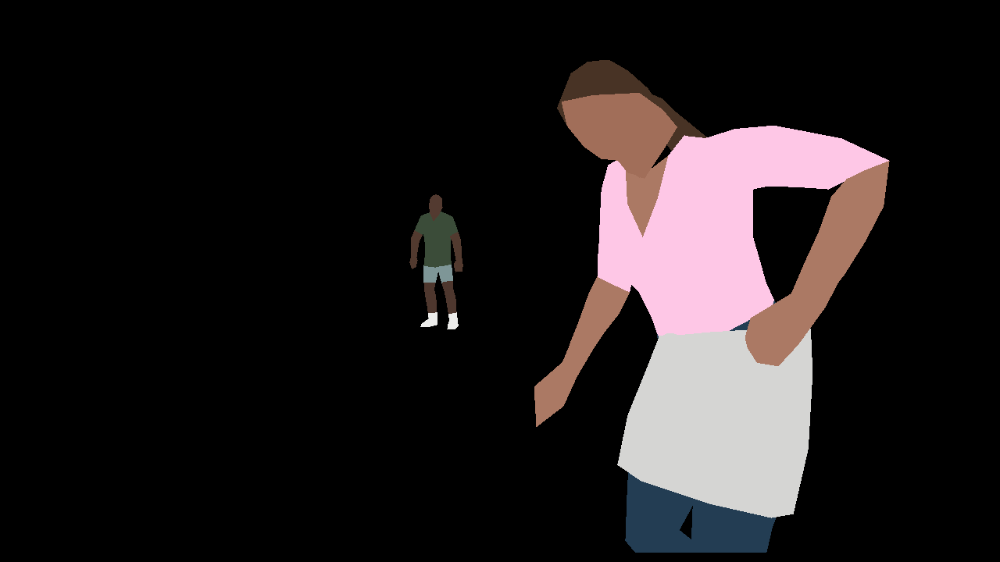

序章中两名坐着的人物
窗口中的材质掩码按材质区分表面。可以看见两个人物、周围环境和桌子边缘。同一帧的正常合成画面几乎全黑。


游戏窗口显示出了三维场景
呈现回执与选定的诊断图像吻合，之后一帧的内容又发生了变化。由此可以确认，游戏通过这条诊断路径显示出了变化中的几何体。

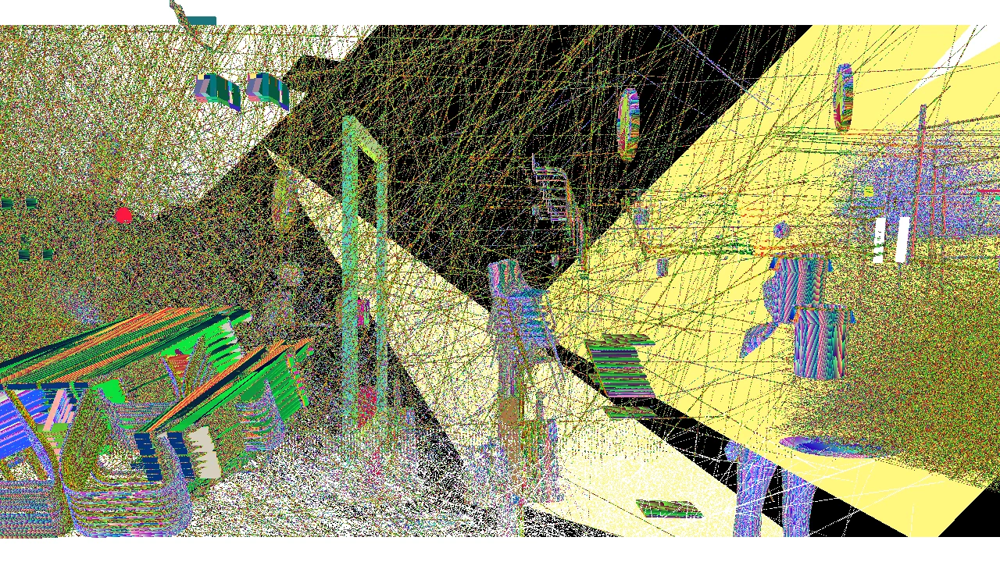
渲染器内部的街景
两个中间目标都显示出了相互对应的建筑边缘、路面和立柱。当时的原生输出仍是暗色背景上的片头字幕。

彩色图与深度图中的轮廓相符
电缆和路牌在深度图中的位置与彩色图相同。这是这组本地测试里第一次辨认出场景表面。


技术资料